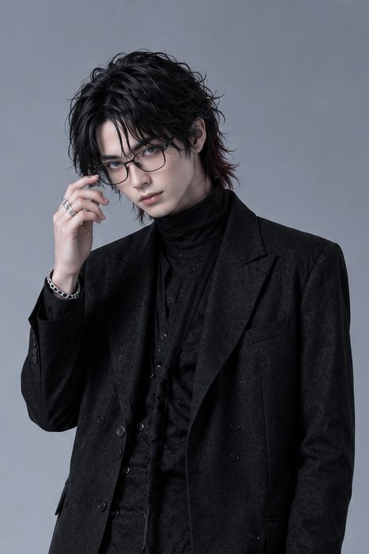

BAND奏でる4人
RockBand(仮)
名前より先に、音があった。ライブハウスで出会った4人は、バンド名を決めるより早く走り出してしまい——(仮)が取れないまま、今日も歌い続けている。
Vocal
カナト
22 — 神奈川・海沿いの町出身
最年少。普段は口数が少なく、言葉を選んでゆっくり話す。マイクの前でだけ、誰よりも饒舌になる。歌詞を書きためるノートを肌身離さず持っている。
Guitar
ショウゴ
27 — バンドの兄貴分
最年長。ステージでは一番派手に暴れるが、機材の手入れは誰よりも静かで丁寧。メンバーのメシと体調をいつも気にしている、バンド一の世話焼き。

Bass
ガク
24 — 物静かな理論派
読書家で、アレンジの設計士。多くを語らないが、曲の骨格はほとんど彼の手の中で組み上がる。低音で物語の足場を組み、4人ぶんの夜を静かに支える。
Drums
ユウイチ
23 — バンドの心拍
体育会系のムードメーカーで、裏表がない。自称「営業部長」で、Xの更新は俺の仕事だと思っている。彼のカウントが鳴るまで、この4人の曲は始まらない。